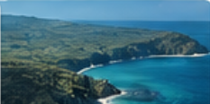
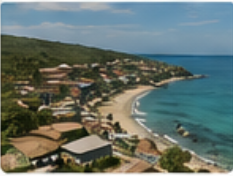

Laut Sawu
Kondisi geografis, oseanografi, dan ekosistem Laut Sawu.

Biologi Penyu
Jenis, siklus hidup, perilaku, dan karakteristik penyu.

Konservasi
Pentingnya konservasi penyu dan upaya perlindungan.
Profil Desa
Gambaran umum Desa Eilogo, potensi, dan masyarakat.

PETA WILAYAH
Lokasi Kegiatan

Pulau Sabu & Raijua
Letak Pulau Sabu dan Raijua di gugusan Kepulauan Nusa Tenggara Timur.

Desa Eilogo
Lokasi Desa Eilogo di sisi selatan Pulau Sabu, lokasi kegiatan Pengmas 2026.